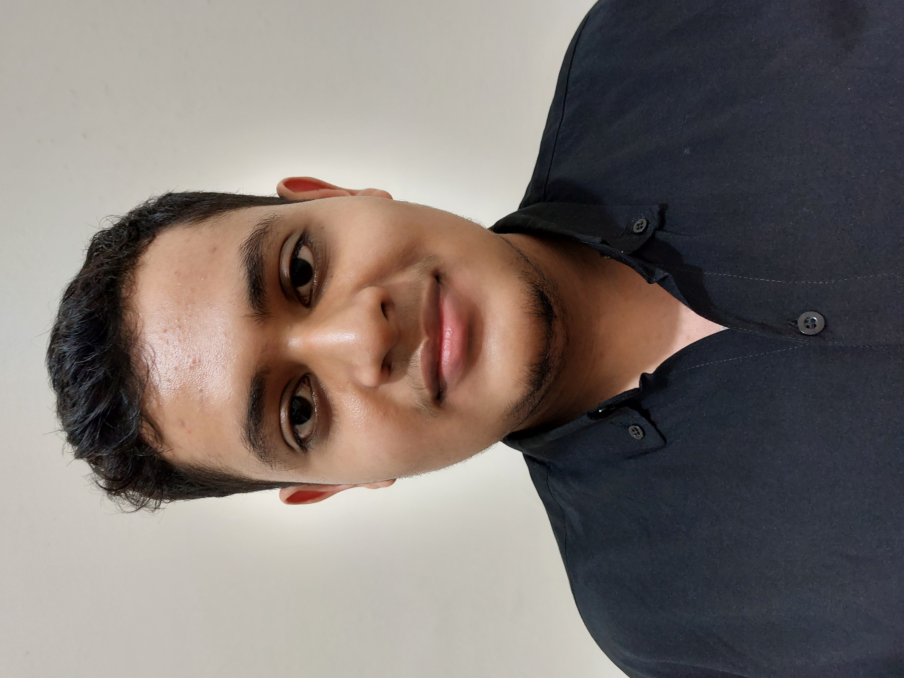

Curriculum Vitae

Data Pribadi
Nama : Fahmi Saleh Alweini
TTL : 13 Januari 2002
Jenis Kelamin : Laki-Laki
Agama : Islam
Hobi : Futsal
Tinggi Badan : 170 CM
Alamat : Jl. Petamburan 4, Tanah Abang, Jakarta Pusat
Handphone : 087883691011
Email : Alweiny.fahmi@gmail.com
Data Pendidikan
SD : SDN Petamburan 01 (2014)
SMP : SMPN 16 Jakarta (2017)
SMA : SMA Al Minhaj Shahabah (2020)
Perguruan Tinggi : Sekolah Tinggi Teknik Terpadu Nurul Fikri